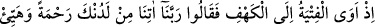

ağzına koydular ve: “Umulur ki Allah kıyâmetten evvel bunlara mü’min bir topluluğu
vâkıf kılar da haberlerini öğrenirler.” dediler.
Onların uzun süre mağarada canlı kalmaları, bizim âyetlerimizin ve kudretimizin
delillerindendir. Ashâb-ı Kehfin kıssası her ne kadar hârikulâde işlerden olsa da
Allah’ın diğer âyetlerine nisbetle şaşılacak bir şey değildir. Allah’ın öyle şaşılacak
âyetleri vardır ki onların kıssası, bu âyetlerin yanında basit kalır.
Kâşifî der ki: “Yâni onların kıssası, göklerin ve yerin yaratılışında zâhir olan bizim
kudretimize nisbetle daha acayip ve garip değildir. Âyetteki “kehf”ten maksad
mağaradır. Bu mağara, Dakyanus isimli kralın başşehri Efsus şehrinin havalisinde
Anchilus dağında bulunan Cirom adlı mağaradır.
Rivâyet edilir ki Dakyanus Rum memleketlerini kendine bağladığı zaman Efsus
şehrine de ulaştı. Orada kendi putları için bir kurban kesme yeri/mezbaha yaptırdı.
Şehir halkına o putlara tapmalarını teklif etti. Onun sözünü dinleyenler kurtuldu. Sözünü
kabul konusunda inad edenleri ise öldürdü. Efsus şehrinin büyüklerinin oğullarından
Allah’a ibâdet eden yeni yetme altı genç, bir köşeye çekilip duâ ve niyazla meşgul
oldular. Onları o zâlimin fitnesinden emin eylemesini Hak Teâlâ’dan istediler.
Hâsılı o gençlerin durumu Dakyanus’un kulağına ulaştı. Dakyanus onların, huzuruna
getirilmesini emretti ve bunu çok istedi. Onlar tevhid yolunda sâbit ve muhkem
olmuşlardı. Mutlak olarak onun fermanını ve dâvetini kabul etmediler.
Dakyanus onların üzerlerindeki elbiselerin soyulmasını emretti. Onlara: “Siz
gençsiniz ve yaşınız küçük. Size iki üç gün mühlet verdim. Kendi durumunuzu düşünün,
sizin maslahatınız benim sözümü kabul etmekte mi değil mi?” dedi.
Dakyanus o şehirden başka bir yere gitti. Gençler onun gitmesini ganimet bildiler.
Kendi durumlarını birbirleriyle istişâre ettiler. Hepsinin görüşü firarda karar buldu.
Her biri babasının evinden azık ve nafaka için yetecek kadar mal aldı. Şehre yakın bir
dağa doğru yöneldiler. Yolda onlara bir çoban rast geldi ve onların dinine girdi. Onlarla
birlikte sefer etmeye muvafakat etti. Çobanın köpeği de onların ardından seğirtmeye
başladı. Öyle ki onu men ettilerse de kendilerinden uzaklaştıramadılar. Rabbi onu dile
getirdi ve onlara açık bir lisanla:
“Benden korkmayın. Ben Allah’ın dostlarını dost edindim. Siz uyuyunca ben size
bekçilik ederim.” dedi. Dağın yakınına varınca çoban: “Ben bu dağda bir mağara
biliyorum, oraya sığınabilirsiniz.” dedi. İttifakla mağaraya yöneldiler. Cenâb-ı Hak
onların mağaraya gitmesini şöyle haber veriyor:”
10. O (yiğit) gençler mağaraya sığınmışlar ve: Rabbimiz! Bize tarafından rahmet